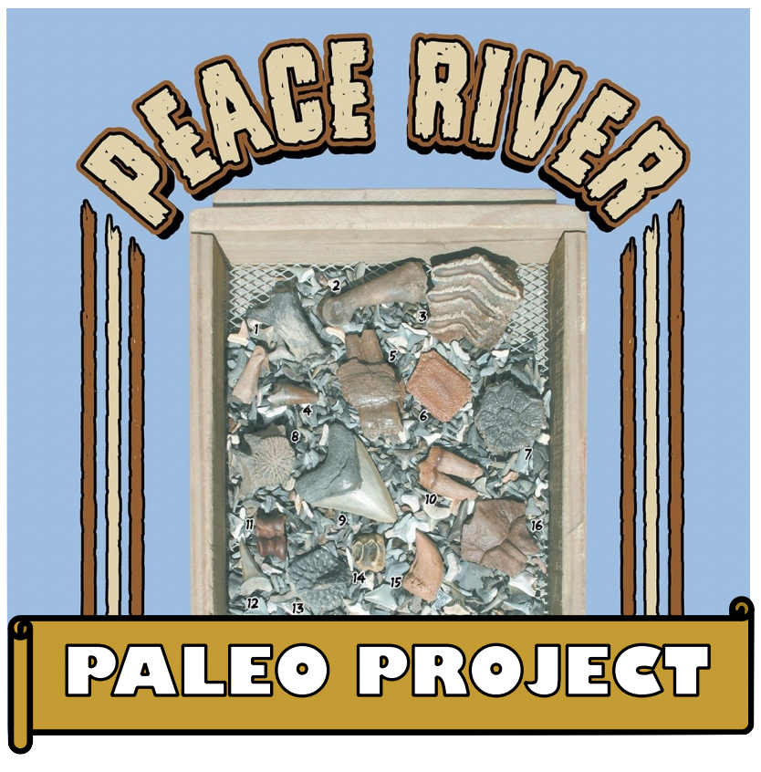
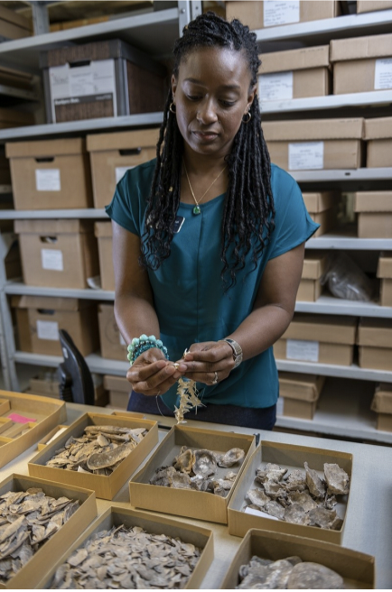

Our Meetings
Guests are always welcome to the meetings if you would like see what
we're all about. Meetings start at 7:00 pm and usually take place the
first Saturday of the month, unless there is a holiday, then it's on
the second Saturday of the month.
Located at the USF Behavioral Science Room #103.
After the speaker finishes we have a short break. Then we
draw for door prizes and some raffle items as well. We finish with
any final announcements.
NOTE: Due to COVID in-person meetings are currently not supported
at USF. Until further notice, meetings will be held via YouTube
live stream at 7pm on the day of the scheduled meeting.
A recording of the meeting can be watched from the club's YouTube
channel anytime after the live stream ends.
Upcoming Meetings and Guest Speakers (2020-2021 season):
NOTE: All meetings are the first Saturday of the month at 7:00 pm
unless otherwise clearly noted.
Sept. 5 - Pete Larson, Black Hills Institute of Geologic
Research
YouTube Live Stream: Good Science in Commercial Paleontology
If you missed this Live Stream you can re-watch it here on
YouTube
Pete Larson is probably one of the most well know dinosaur hunters
in North America. No one has found more T. rex than Larson and crew.
With the release of CNN Films Emmy winning, “Dinosaur 13” and
appearances on Discovery Channel’s Dinosaur Hunters Pete Larson is
quite the celebrity.
Pete is one of the most down to earth people you’re ever going to
meet. And while many of you are anxious to hear the story of “Sue”,
Pete has moved on. I’ll tell you now, if you haven’t seen Dinosaur
13, you need to watch it. You need to know the triumph and
heartbreak Pete has been through to get to this point in his career
and research.
Pete will be discussing good science being conducted
by commercial paleontologists. Fossils have been discovered and
sold for almost a 1000 years. From Charles Sternberg to the Black
Hills Institute, there is good science being collected in commercial
paleontology.
This will mark Pete’s third presentation to TBFC, but
his first through a virtual meeting. I can’t tell you how pleased
we are to have Pete Larson back for this very special event.
Oct. 3 - Tyler Bowling, Manager of the Florida Program for Shark Research
YouTube Live Stream: Sharks!
Let's talk about Sharks! Our October guest speaker will be
Tyler Bowling, the manager of the Florida Program for Shark
Research.
Join us on the YouTube live stream as he talks to us about sharks!
Nov. 14 - Online Auction
No Virtual Meeting - instead there will be an Online Auction -
Deatils will be posted on the TBFC Facebook Page.
Dec. 5 - Dr. Richard Hulbert, Florida Museum of Natural History
YouTube Live Stream:
Introducing the Peace River Paleo Project (PRiPP):
Research, Outreach, and Education

Vertebrate fossils collected from the Peace River and its tributaries
in Hardee and De Soto Counties were the frequent objects of study
by professional paleontologists between 1880 and 1928. But since
then very few scientific publications have used Peace River specimens.
This change was the result of discovery of Florida fossil vertebrate
localities that greatly exceeded those then known from the
Peace River in terms of quality and/or quantity of specimens.
When Florida Museum paleontologists began a systematic program
of collecting river fossils in the 1960s, they concentrated their
efforts in northern Florida. But thanks to many generous public
donations, Peace River specimens in Florida Museum collections
now exceed 2500, some belonging to species never recorded from
the region in the scientific literature. Over the next two years, UF
graduate student Mackenzie Ross and Florida Museum collections
manager Richard Hulbert will lead a project based on this sample.
In addition to traditional paleontological research, including
description of specimens and analyses of mammalian teeth to make
inferences about diet and climate, the PRiPP will provide K-12
science educators in the region with actual and virtual fossil
specimens along with data and technical support to develop their own
course curricula and lesson plans dealing with Peace River
paleontology. The project will also develop multi-media content aimed at
avocational and recreational fossil collectors, such as on-line
identification guides, as well as in-home visits to private collections once
these can be done safely.
Jan. 9 (Second Saturday!) - Chris DeLorey, AKA, Dr. Dino!
As seen on Dinosaur Hunters! YouTube Live Stream
Our next meeting will be with guest speaker Chris DeLorey!
Starts at 7pm on our YouTube Channel!
Feb. 6 - Nicole Cannarozzi: Environmental Archaeology,
Collection Manager Florida Museum of Natural History

Archaeologist and collections assistant Nicole Cannarozzi was
appointed collections manager of the Florida Museum of Natural
History’s environmental archaeology program in 2018. She originally
started at the Florida Museum in 2004 as a faunal analyst after graduating
from the University of Florida with a bachelor’s degree in anthropology.
She’s worked with the museum in various positions over the past 14
years while completing her PhD. “The museum is one of the reasons I’ve stayed in
Gainesville,” said Cannarozzi, who was hired into her current
position in March 2018. “I’ve been lucky to work in one of the best
zooarchaeology labs in the country.” Cannarozzi said she wants to
focus on outreach, with a goal of recruiting more volunteers and
participating in museum-sponsored and external events to expose more
people to environmental archaeology. “I’m very happy, it’s my dream
job,” Cannarozzi said. “I really like the integrated nature of the
museum where you have many departments and disciplines under one
roof. That kind of atmosphere fosters communication and
collaboration that is so important for our research.”
The Florida Museum environmental archaeology program was established
in 1961. Its researchers use soil and animal and plant remains from
archaeological sites to better understand past human interactions
with the natural environment.
Starts at 7pm on our YouTube Channel!
Mar. 6 - No Virtual Meeting
Hosting SWAP Meet instead!
Apr. 3 - Victor Perez: Assistant Curator of Paleontology at the
Calvert Marine Museum
Specializing in Cenozoic sharks and rays
Our next meeting will be with guest speaker Victor Perez! He will be
presenting Sharks & Rays of Florida: A 45 Million year History.
Starts at 7pm on our YouTube Channel!
May 1 - TBA
View Our Past Virtual Meetings
COVID-19 has forced us to adapt!
Since in-person meetings are not possible during this time, the club
will continue to host Virtual Live Meetings on our YouTube channel.
Subscribe to the channel to get notifications when we go live!
All our club live stream meetings will be saved and can be re-watched anytime!
You can view past virtual meetings in the playlist below: